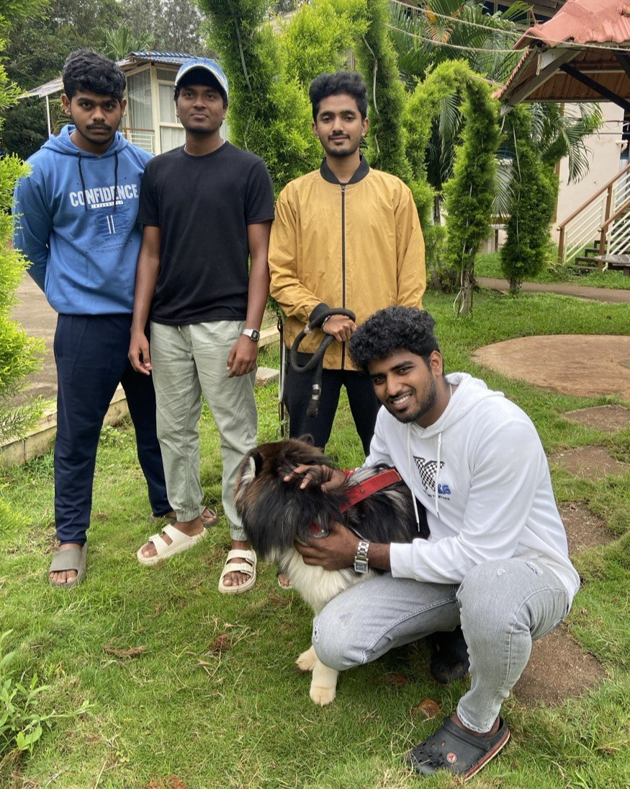

To create a world where every stray has a loving home.Our mission in animal adoption is to provide a loving and forever home for every pet in need. We are dedicated to rescuing animals from shelters, streets, and situations of neglect, offering them a second chance at life. Through education, awareness, and compassionate care, we aim to connect each pet with responsible, lifelong families who will cherish them as part of their own. By promoting adoption over breeding, we hope to reduce the number of animals in shelters and create a world where every pet is valued and given the opportunity to thrive. We believe that every animal deserves a safe and caring environment, and our commitment to this mission drives us to help as many pets as possible find the love they deserve.
